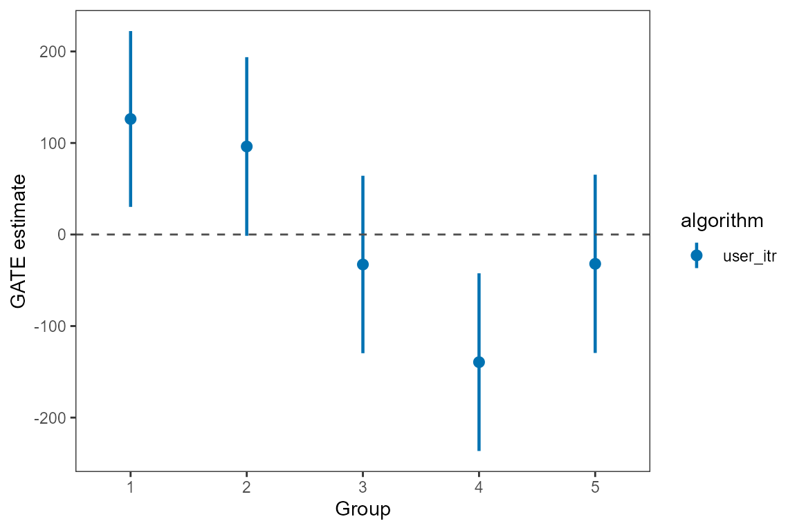
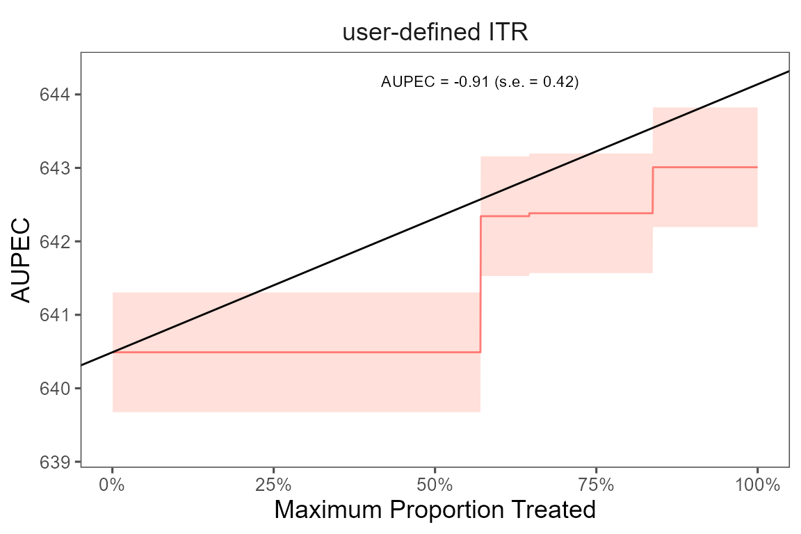

Instead of using the ITRs estimated by evalITR models,
we can define our own ITR and evaluate its performance using the
evaluate_itr function. The function takes the following
arguments:
| Argument | Description |
|---|---|
user_itr |
a function defined by users that returns a unit-level continuous score for treatment assignment (we assume those that have score less than 0 should not have treatment) |
data |
a data frame |
treatment |
a character string specifying the treatment variable in
the data
|
outcome |
a character string specifying the outcome variable in
the data
|
budget |
a numeric value specifying the maximum percentage of population that can be treated under the budget constraint |
The function returns an object that contains the estimated GATE, ATE, and AUPEC for the user defined ITR.
# user's own ITR
score_function <- function(data){
data %>%
mutate(score = case_when(
school_urban == 1 ~ 0.1, # inner-city
school_urban == 2 ~ 0.2, # suburban
school_urban == 3 ~ 0.4, # rural
school_urban == 4 ~ 0.3, # urban
)) %>%
pull(score) -> score
return(score)
}
# evalutate ITR
user_itr <- evaluate_itr(
user_itr = score_function,
data = star_data,
treatment = treatment,
outcome = outcomes,
budget = 0.2)
# summarize estimates
summary(user_itr)
#> ── PAPE ────────────────────────────────────────────────────────────────────────
#> estimate std.deviation algorithm statistic p.value
#> 1 0 0 user_itr NaN NaN
#>
#> ── PAPEp ───────────────────────────────────────────────────────────────────────
#> estimate std.deviation algorithm statistic p.value
#> 1 1.1 0.67 user_itr 1.6 0.11
#>
#> ── PAPDp ───────────────────────────────────────────────────────────────────────
#> Cannot compute PAPDp
#>
#> ── AUPEC ───────────────────────────────────────────────────────────────────────
#> estimate std.deviation statistic p.value
#> 1 -0.91 0.42 -2.2 0.028
#>
#> ── GATE ────────────────────────────────────────────────────────────────────────
#> estimate std.deviation algorithm group statistic p.value upper lower
#> 1 126 58 user_itr 1 2.16 0.031 30.2 222
#> 2 96 59 user_itr 2 1.62 0.105 -1.4 194
#> 3 -33 59 user_itr 3 -0.56 0.579 -129.7 64
#> 4 -139 59 user_itr 4 -2.36 0.018 -236.5 -42
#> 5 -32 59 user_itr 5 -0.54 0.589 -129.4 65We can extract estimates from the est object. The
following code shows how to extract the GATE estimates for the writing
score with the causal forest algorithm. We can also plot the estimates
using the plot_estimate() function and specify the type of
estimates to be plotted (GATE, PAPE,
PAPEp, PAPDp).
# plot GATE estimates
library(ggplot2)
gate_est <- summary(user_itr)$GATE
plot_estimate(gate_est, type = "GATE") +
scale_color_manual(values = c("#0072B2", "#D55E00"))
We plot the estimated Area Under the Prescriptive Effect Curve (AUPEC) for the writing score across a range of budget constraints for user defined ITR.
# plot the AUPEC
plot(user_itr)